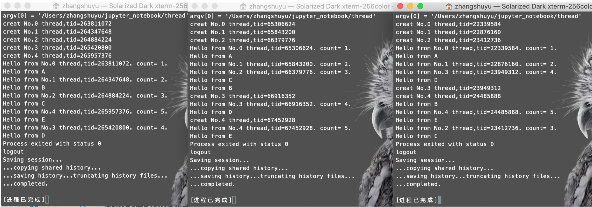
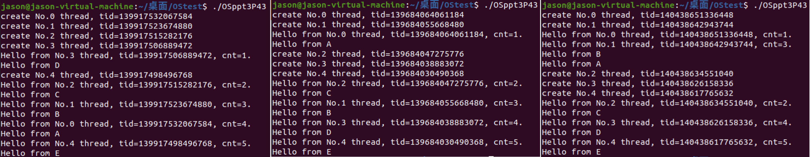
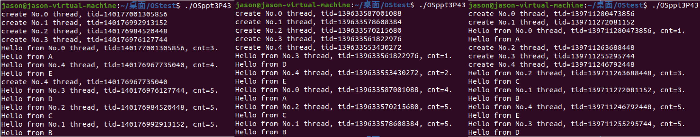

操作系统折腾记（一）
学习操作系统的精髓在哪里？当然是自己折腾啊！（逃
学习线程的时候，老师在 ppt 中展示了这样一段代码：
1 | |
因为是学习用，所以这段代码有些奇怪的地方，比如在主线程里定义了 msgs 数组，然后拿一个全局指针 ptr 指过去，意思是让我们知道，这个 msgs 在对等线程中不能访问，但是对等线程可以通过全局的 ptr 访问到 msgs——但这些不重要，不是我们折腾的点儿。
老师在 ppt 中贴了 3 次运行的结果，如下图所示：

意思很明确，就是线程的执行顺序是随机的，谁也不知道什么时候当前线程会被切断，转而执行另一个线程。比如，Hello from No.1 和 Hello from B 这两个 printf 之间，就很可能被切断。
然后我无意间发现了一个奇怪的现象。按理说，就算 cnt 自增后被切断了，那切回来输出时，cnt 只会变得更大而不会变小，换句话说，结果的 count 值应该是单调不减的才对，可为什么老师的结果截图中，输出 count=5 之后还会输出 count=3 呢？
和同学们讨论后，我们达成的一致是，cnt 在自增后，会将其值作为参数传递给 printf 的形参，这个过程是不会（或者很小可能）被切断的。随后，即使在执行 printf 过程中线程被切断了、cnt 被其他线程改变了，但是 printf 内的形参值已经不受影响了，于是依旧输出的是原本的 cnt。
不过俗话说得好，talk is cheap, show me the code，我们必须要实打实地折腾一番，于是我在虚拟机（Ubuntu 20.04）中编写了上述代码并执行，结果如下：

没错，虽然 cnt 偶尔会被打乱，但运行了很多次，cnt 都遍历完了 1~5 所有的数字，虽然不能说一定，但是可以说大概率下，cnt 自增和传参给 printf 没有被切断。
正面的实验做了，可没有反面的实验总不放心。不是切不断吗，那就人为的切断它呗！切断的方式很简单，在 cnt 自增与传给 printf 之间 sleep 一会儿就行：
1 | |
运行结果如下：

count 的值单调不减，印证了我们的想法，nice！
但是解决一个旧问题，又出现了一个新问题。从老师的截图中可以看到，count 值和 No 序号神奇地一一对应了，而我们的运行结果并不对应。一个可能的解释是，在老师的机子上，线程被创建和 cnt 自增之间不会被切断，不过……这真的合理吗？